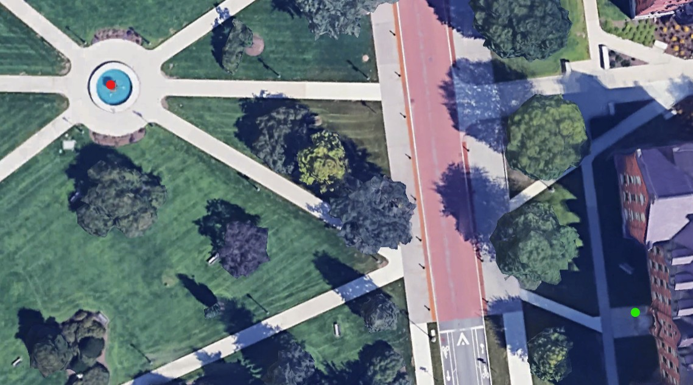

Stats
Par: 14
Distance: 280 ft
Hole Description
The last hole starts a bit differently, starting from the staircase leading to old mill, the course starts by the person sliding down one of the railings, spining 360 degrees, and throwing towards the fountain, the target is to get it in the upper bowl of the fountain and the rule is generally that the loser of the game has to go into the fountain after finishing the course to get the frisbees.
Map key: green dot starting box, red dot target, blue dot mandatory.